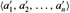
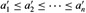

|
|
< Day Day Up > |
|
This part presents several algorithms that solve the following sorting problem:
Input: A sequence of n numbers 〈a1, a2, ..., an〉.
Output: A permutation (reordering)  of the input sequence such that .
The input sequence is usually an n-element array, although it may be represented in some other fashion, such as a linked list.
In practice, the numbers to be sorted are rarely isolated values. Each is usually part of a collection of data called a record. Each record contains a key, which is the value to be sorted, and the remainder of the record consists of satellite data, which are usually carried around with the key. In practice, when a sorting algorithm permutes the keys, it must permute the satellite data as well. If each record includes a large amount of satellite data, we often permute an array of pointers to the records rather than the records themselves in order to minimize data movement.
In a sense, it is these implementation details that distinguish an algorithm from a full-blown program. Whether we sort individual numbers or large records that contain numbers is irrelevant to the method by which a sorting procedure determines the sorted order. Thus, when focusing on the problem of sorting, we typically assume that the input consists only of numbers. The translation of an algorithm for sorting numbers into a program for sorting records is conceptually straightforward, although in a given engineering situation there may be other subtleties that make the actual programming task a challenge.
Many computer scientists consider sorting to be the most fundamental problem in the study of algorithms. There are several reasons:
Sometimes the need to sort information is inherent in an application. For example, in order to prepare customer statements, banks need to sort checks by check number.
Algorithms often use sorting as a key subroutine. For example, a program that renders graphical objects that are layered on top of each other might have to sort the objects according to an "above" relation so that it can draw these objects from bottom to top. We shall see numerous algorithms in this text that use sorting as a subroutine.
There is a wide variety of sorting algorithms, and they use a rich set of techniques. In fact, many important techniques used throughout algorithm design are represented in the body of sorting algorithms that have been developed over the years. In this way, sorting is also a problem of historical interest.
Sorting is a problem for which we can prove a nontrivial lower bound (as we shall do in Chapter 8). Our best upper bounds match the lower bound asymptotically, and so we know that our sorting algorithms are asymptotically optimal. Moreover, we can use the lower bound for sorting to prove lower bounds for certain other problems.
Many engineering issues come to the fore when implementing sorting algorithms. The fastest sorting program for a particular situation may depend on many factors, such as prior knowledge about the keys and satellite data, the memory hierarchy (caches and virtual memory) of the host computer, and the software environment. Many of these issues are best dealt with at the algorithmic level, rather than by "tweaking" the code.
We introduced two algorithms that sort n real numbers in Chapter 2. Insertion sort takes Θ(n2) time in the worst case. Because its inner loops are tight, however, it is a fast in-place sorting algorithm for small input sizes. (Recall that a sorting algorithm sorts in place if only a constant number of elements of the input array are ever stored outside the array.) Merge sort has a better asymptotic running time, Θ(n lg n), but the MERGE procedure it uses does not operate in place.
In this part, we shall introduce two more algorithms that sort arbitrary real numbers. Heapsort, presented in Chapter 6, sorts n numbers in place in O(n lg n) time. It uses an important data structure, called a heap, with which we can also implement a priority queue.
Quicksort, in Chapter 7, also sorts n numbers in place, but its worst-case running time is Θ(n2). Its average-case running time is Θ(n lg n), though, and it generally outperforms heapsort in practice. Like insertion sort, quicksort has tight code, so the hidden constant factor in its running time is small. It is a popular algorithm for sorting large input arrays.
Insertion sort, merge sort, heapsort, and quicksort are all comparison sorts: they determine the sorted order of an input array by comparing elements. Chapter 8 begins by introducing the decision-tree model in order to study the performance limitations of comparison sorts. Using this model, we prove a lower bound of Ω(n lg n) on the worst-case running time of any comparison sort on n inputs, thus showing that heapsort and merge sort are asymptotically optimal comparison sorts.
Chapter 8 then goes on to show that we can beat this lower bound of Ω(n lg n) if we can gather information about the sorted order of the input by means other than comparing elements. The counting sort algorithm, for example, assumes that the input numbers are in the set {1, 2, ..., k}. By using array indexing as a tool for determining relative order, counting sort can sort n numbers in Θ(k + n) time. Thus, when k = O(n), counting sort runs in time that is linear in the size of the input array. A related algorithm, radix sort, can be used to extend the range of counting sort. If there are n integers to sort, each integer has d digits, and each digit is in the set {1, 2, ..., k}, then radix sort can sort the numbers in Θ(d(n + k)) time. When d is a constant and k is O(n), radix sort runs in linear time. A third algorithm, bucket sort, requires knowledge of the probabilistic distribution of numbers in the input array. It can sort n real numbers uniformly distributed in the half-open interval [0, 1) in average-case O(n) time.
The ith order statistic of a set of n numbers is the ith smallest number in the set. One can, of course, select the ith order statistic by sorting the input and indexing the ith element of the output. With no assumptions about the input distribution, this method runs in Ω(n lg n) time, as the lower bound proved in Chapter 8 shows.
In Chapter 9, we show that we can find the ith smallest element in O(n) time, even when the elements are arbitrary real numbers. We present an algorithm with tight pseudocode that runs in Θ (n2) time in the worst case, but linear time on average. We also give a more complicated algorithm that runs in O(n) worst-case time.
Although most of this part does not rely on difficult mathematics, some sections do require mathematical sophistication. In particular, the average-case analyses of quicksort, bucket sort, and the order-statistic algorithm use probability, which is reviewed in Appendix C, and the material on probabilistic analysis and randomized algorithms in Chapter 5. The analysis of the worst-case linear-time algorithm for order statistics involves somewhat more sophisticated mathematics than the other worst-case analyses in this part.
|
|
< Day Day Up > |
|